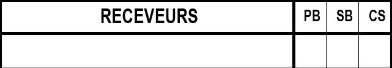

La dernière ligne contient le total de chaque colonne individuelle
, mais s’il n’y a eu qu’un seul receveur durant le match, ou que le jeu est crédité au lanceur.
La dernière ligne contient le total de chaque colonne individuelle
, mais s’il n’y a eu qu’un seul receveur durant le match, ou que le jeu est crédité au lanceur.
Performance des receveurs .
A droite de la table des statistiques des lanceurs, il existe une zone réservée pour les receveurs.
NOTE GENERALE : les valeurs correspondant aux statistiques des lanceurs seront notés sur la même ligne que le nom du receveur correspondant.
 L a colonne ‘ RECEVEURS ’ contiens le nom complet des receveu r s : Le nom de famille en majuscule et le prénom en minuscule . La première ligne est pour le receveur partant, et les suivantes pour ses remplaçants par ordre d’apparition.
La dernière ligne contient le total de chaque colonne individuelle
, mais s’il n’y a eu qu’un seul receveur durant le match, ou que le jeu est crédité au lanceur.
| PB |
Nombre de balles passées.
|
| SB |
Nombre de bases volées allouées au receveur.
|
| CS |
Nombre de coureurs retirées lorsqu’il tentaient de voler une base.
|
Tous les SB et CS ne sont pas forcément créditer au receveur. Dans le cas où ils doivent être crédité au x lanceur s , le nom d es lanceur s doi vent être notés sur les line 5-6 de la section des receveurs et on doit y mentionner le nombre de SB ou CS.